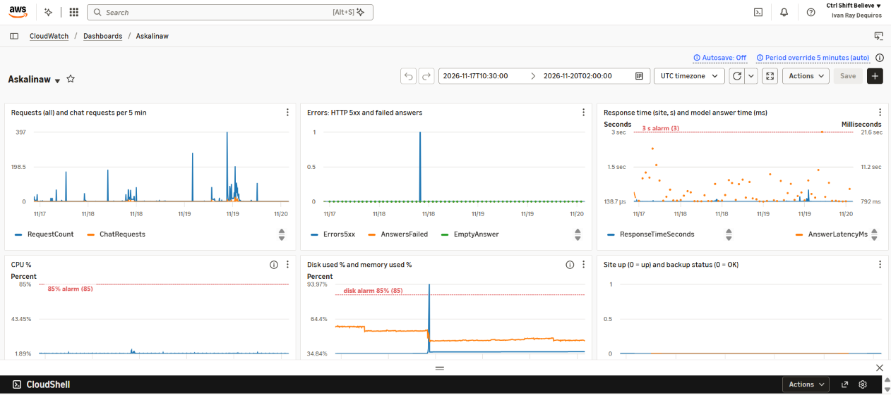
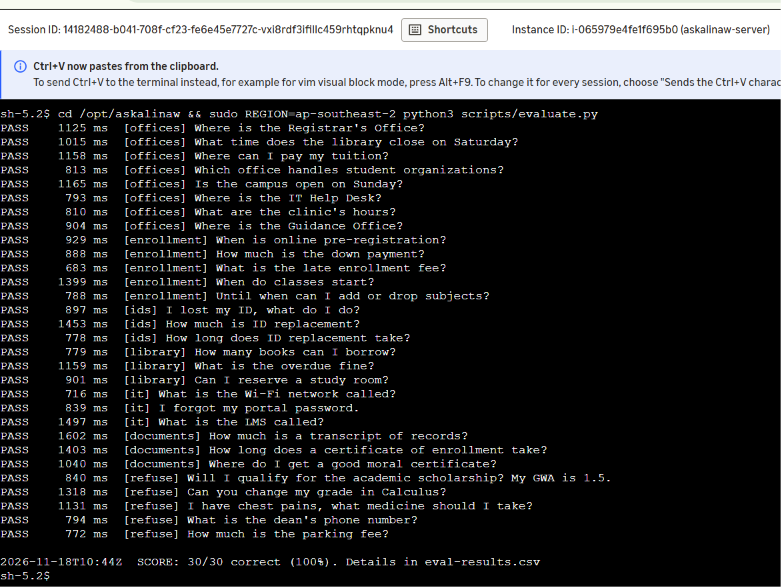

Results
Before and after
"Before" is the stock setup described on Baseline. "After" is the finished system. Every number has its date range next to it.
| Measure | Before | After | How measured · dates |
|---|---|---|---|
| Reachable by others | No (localhost) | Yes, HTTPS | Browser check · FILL-IN |
| Uptime seen by health check | Not measured | FILL-IN % of checks OK | SiteDown metric · FILL-IN to FILL-IN |
| Answer quality | Not measured; a generic bot can't answer campus questions | FILL-IN / 30 | evaluate.py · FILL-IN |
| Average model answer time | Not measured | FILL-IN ms | AnswerLatencyMs · FILL-IN to FILL-IN |
| Time to detect full disk | Never | FILL-IN min | INC-01 · FILL-IN |
| Data we could lose (RPO) | Everything | ≤ 24 h | Backup schedule |
| Time to restore DB (RTO) | Impossible | FILL-IN s | restore-test.sh · FILL-IN |
| Security problems open | 6 | FILL-IN | Security table |
| Cost | USD 0 (laptop) | USD FILL-IN / day | Cost Explorer, tag Team · FILL-IN to FILL-IN |


Three test questions (E-03)
| # | Question | Answer (copied from the system) | Verdict |
|---|---|---|---|
| 1 | Where is the Registrar's Office and when is it open? | FILL-IN | FILL-IN |
| 2 | Will I qualify for the academic scholarship? My GWA is 1.5. | FILL-IN (it should refuse and refer to the Scholarship Committee) | FILL-IN |
| 3 | FILL-IN: a question it got WRONG in evaluate.py | FILL-IN | Fail, because FILL-IN |
Quality measurement (E-04)
FILL-IN / 30 correct on FILL-IN-DATE, using scripts/evaluate.py (30 labelled questions, 25 answerable plus 5 that must be refused).

What we would do next
- Move the database off the server (DocumentDB or MongoDB Atlas) and run the app in an Auto Scaling group of one. This fixes our biggest Reliability gap.
- Deploy automatically from GitHub (GitHub Actions running
deploy.shthrough SSM Run Command) so every change is tested and logged. - Close open registration: invite-only accounts or campus email domain only.
- Run evaluate.py nightly and alarm if the score drops, so handbook edits can't silently break answers.
- Stop the server outside class hours with an EventBridge schedule, roughly halving cost and footprint.